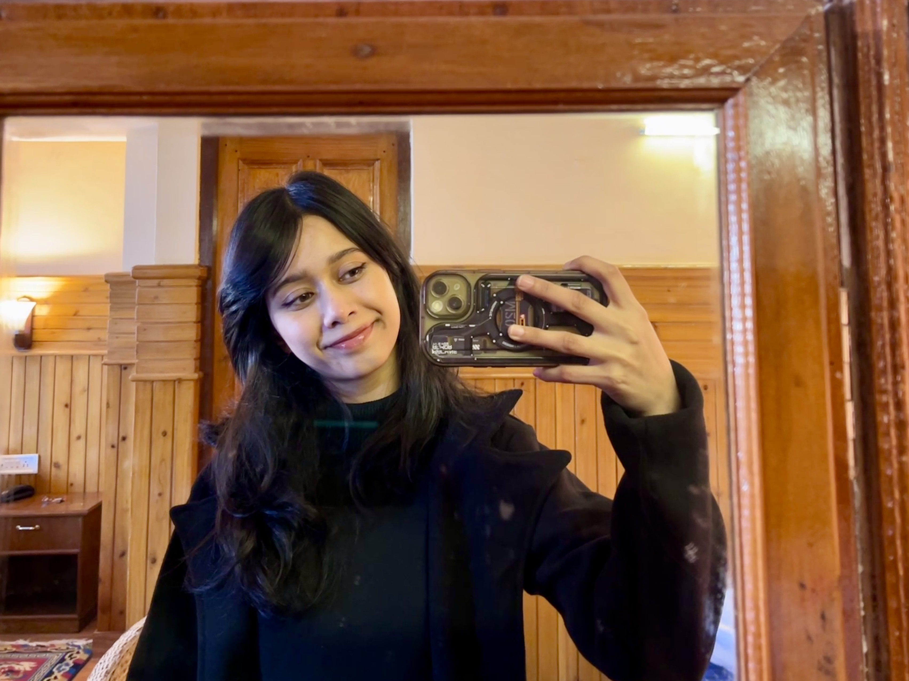
There is an unmistakable elegance in things that refuse to shout. In a modern era consumed by frantic self-promotion and hasty impressions, genuine poise remains the rarest form of distinction.
This monograph is not an exhibition of volume or applause. It is an editorial investigation into a solitary, fascinating cadence: how one individual perceives the world through clear logic, quiet aesthetic order, and emotional sincerity. To understand Dinkey is to recognise that confidence is never noisy.
It is the composure to step onto an illuminated stage without a second of hesitation, yet spend deliberate care exploring every nuance of an artistic choice. It is the fierce, protective loyalty she reserves for family and trusted companions — held securely behind a calm, self-possessed exterior.
“True authority does not demand the spotlight; it creates calm in whatever room it enters, guided by an instinct for balance and unwavering self-respect.”
Dinkey-Angana: Defined by an uncommon duality — analytical discipline balanced with artistic grace, firm personal boundaries paired with profound tenderness for family, and the natural presence of a quiet leader.
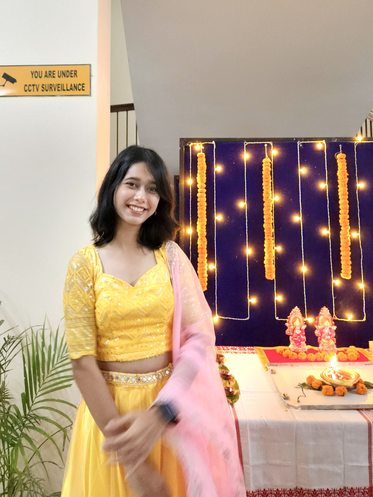
She prefers thinking for herself. Convention alone is never reason enough; if an idea possesses fairness, logic, and substance, she embraces it without pretense.
In everyday conversations, her words are deliberate and unhurried. She explains her mind with natural clarity, never feeling the need to raise her voice to be heard.
She evaluates people and situations with an instinctive analytical gaze. Where others rely on superficial impressions, she looks for integrity and emotional truth.
“She argues with facts, never with volume. When reason is clear, posturing is redundant.”
She is rarely the first to speak to strangers on the street. Yet the moment she steps before an audience or takes command of a room, self-consciousness vanishes completely.
The platform becomes a quiet space for lucid thought. What people remember is not theatrical spectacle, but the tranquil weight of her composure.
Guided by an innate sense of balance, she treats everyone with equal, dignified respect. Artificial hierarchies and hollow titles carry zero currency with her.
She seeks fair outcomes and straightforward sincerity. Her trust, once given, is an unshakeable fortress built on mutual honor.
How an unhurried interior world is so often misread by an impatient exterior society.
Because she does not hand out casual smiles to strangers or fill quiet spaces with frantic pleasantries, casual onlookers occasionally ascribe to her an aloof disposition.
She does not participate in performative agreeableness. She keeps her personal boundaries firm — not to shut people out, but to ensure that whatever enters her circle is grounded in absolute sincerity.
Reserve is not arrogance; it is an internal filter protecting mental stillness in a world driven by excessive volume.
Behind the tranquil composure lies someone profoundly emotional and intuitive. Her inner landscape is vivid, sensitive, and deeply empathetic. She simply chooses never to exhibit it prematurely.
When she grants trust, it is complete and unwavering. With the few who know her intimately, loyalty is not a bargaining chip or casual currency — it is woven into the very fabric of who she is.
Quiet waters run deepest. Her devotion to family and genuine companions is fierce, protective, and endlessly generous.
How a quiet girl from a small town became the person everyone instinctively follows.
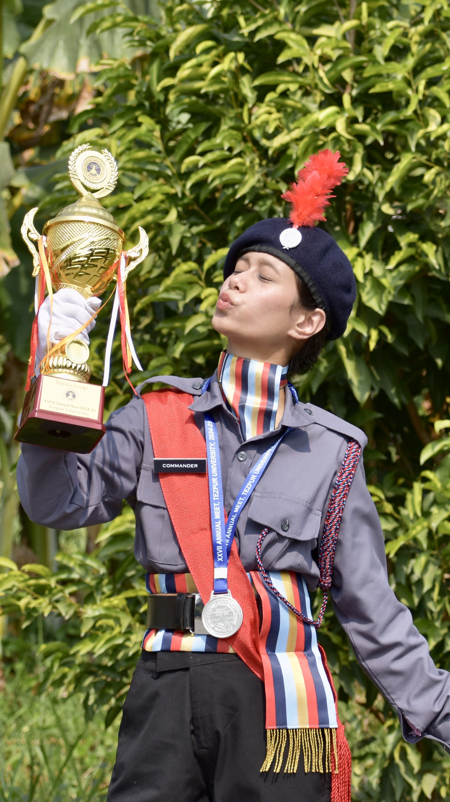
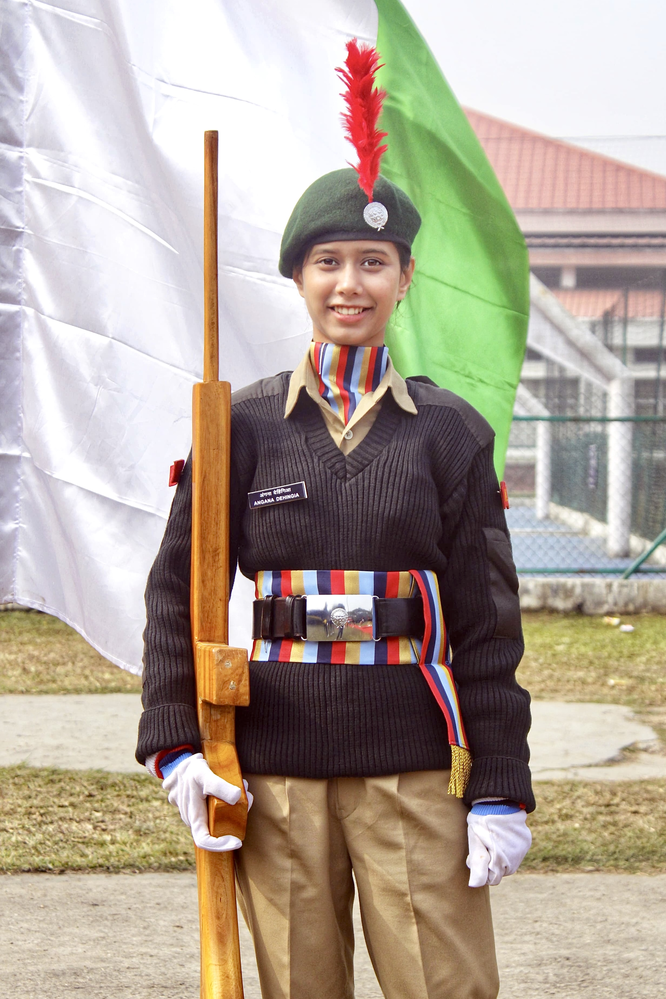
Some people carry an effortless gravity. When she speaks, it is purposeful, measured, and calm. Her leadership never diminishes others — it raises the entire room to a standard of quiet excellence.
She leads with empathy, decides with conviction, and takes responsibility without drama. Authority for her is not a decorative title; it is moral accountability and collective protection.
She possesses the rare ability to command a room simply by standing firm in her principles, inspiring confidence in everyone around her.
“A true leader does not create followers. She creates more leaders.”
The quiet backbone behind cultural events. Always the first to volunteer for difficult tasks, never seeking the spotlight.
Discipline met calm authority. Commanded parade contingents with composure, winning respect through example.
Balanced creative expression with razor-sharp analytical inquiry. Cuts straight to core truths without distraction.
The steady compass for those she loves. When crisis arrives, she remains unshakeable, clear-eyed, and dependable.
Unshakeable and commanding when leading others; delightfully contemplative and indecisive when choosing for herself.
Understands emotions without demanding lengthy explanations; safeguards dignity with quiet, protective grace.
The unmoving anchor in the center of unexpected storms; her serenity naturally stabilizes everyone around her.
Takes unconditional ownership of her words, promises, and actions. Steadfast loyalty woven into her very core.
Before an audience listens, you sit with repetition. Music taught her internal tempo: real growth cannot be rushed, and melody needs silence between its notes.
Cadet training demands endurance in heat and rain, sharp attention, and standing steady under scrutiny. Earning the 'C' certificate built quiet self-sufficiency.
Years of solitary geometric practice — stillness of torso, control of breath, and rhythmic precision. Through it, she commands a room without speaking.
Art training changed how she sees proportion and space. It explains her curated room, her eye for harmony, and her genuine appreciation for subtle detail.
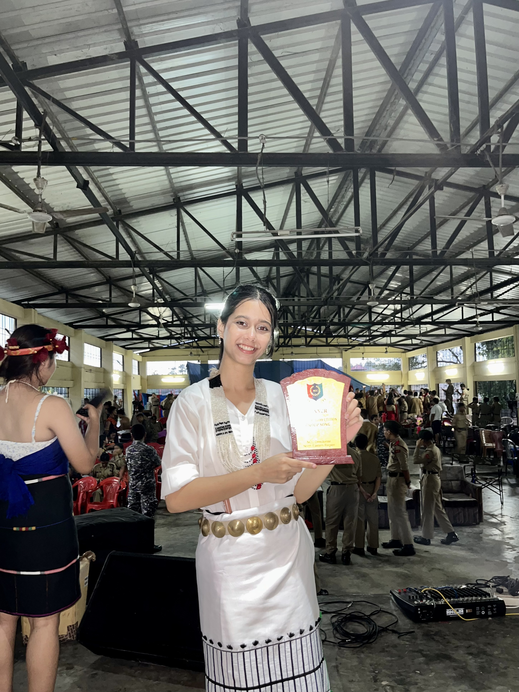
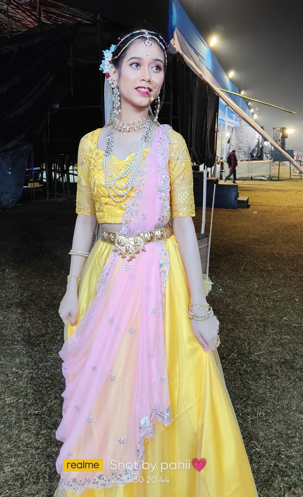
In the community Raas Mahotsav, she once stepped into the divine persona of Radha. It was treated not as theatrical ostentation, but as living cultural memory rooted in the tradition of her town.
Adorned in ceremonial garments and classical ornaments, she carried the timeless devotion of the character with natural grace — an unforgettable chapter of artistic expression.
For those who watched, it was not a performance but a quiet transformation — the moment when years of classical training, inner discipline, and emotional honesty became visible in a single, radiant evening under open skies.
The bedrock of her independence is a home built on unconditional pride and endless warmth.
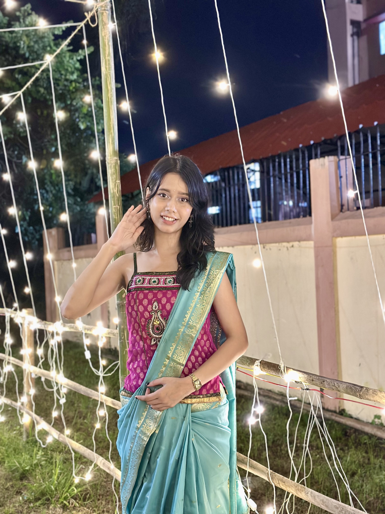
“Respect is not a rank; it is a default.”
Angana cannot tolerate unnecessary hierarchy. To her, an elder, a junior, a stranger, and a friend all deserve the same quiet dignity. She does not perform equality as a slogan; she simply lives it — listening fully, speaking without condescension, and refusing to shrink anyone to fit a pecking order. Fairness, for her, is not a debate; it is a reflex. Even when it would be easier to stay silent, she will question an unfair assumption, not to win an argument, but because truth matters more than comfort. People leave her presence feeling seen rather than sorted — and that, more than any title, is the mark of how she treats the world. She leads the same way: calm, attentive, and unwilling to ask anyone to carry a weight she would not carry herself. In rooms full of noise, she is the one who makes space — and that quiet generosity is what makes her unforgettable.
“My precious bond, my human diary.”
“From holding you in my arms to watching you grow into this kind, beautiful and confident person makes me feel proud.
No matter how much we fight, tease each other or disagree over little things you will always be that annoying younger sibling who holds a special place in my heart. My Human Diary!
I want you to be happy, confident and successful in everything you do. No matter what happens in life, you will always have me by your side.
I may not be able to protect you in every needful situation but I'll always support you, listen to you and stand beside you whenever you need me.
Keep smiling, keep dreaming and be yourself. I wish you a life filled with endless happiness, beautiful opportunities and people who truly value you.
Like it or not you will always be my little one no matter how grown up you become, my precious bond and a beautiful part of my life. Thanks for being born to this Dehingia's clan.”
Preserved in authentic Assamese script. The sacred origin of Dinkey ‘Angana’.
নৱেম্বৰ মাহৰ এটি শাৰদীয় পুৱা। চাৰিওফালে ব্যস্ততা। ঘৰ দুৱাৰ পৰিষ্কাৰ কৰি পদূলিত কলপুলি পুতি শুভলক্ষ্মীক আদৰাৰ প্ৰস্তুতি। সেইদিনা আছিল দীপাৱলী। তেনে এটা দিনতেই আমাৰ সৰু পঁজাটি উজ্জ্বল কৰি আমাৰ মাজলৈ আগমন ঘটিছিল এটি দেৱশিশুৰ। চুবুৰীয়াইও আদৰণি জনাই ক'লে, “তোমালোকৰ ঘৰত মা-লক্ষ্মীৰ প্ৰৱেশ ঘটিছে।” ফুলকুমলীয়া শিশুটিয়ে সেই সময়তে বহুজনৰ দৃষ্টি আকৰ্ষণ কৰিছিল।
দিন বাগৰিল। শিশুটিৰ নামাকৰণৰ প্ৰশ্ন আহিল। মোৰ প্ৰিয় হিন্দী চিনেমা এখনৰ এটি ভাল লগা চৰিত্ৰৰ নামেৰেই তাইক মাতিব ধৰিলো। চৰিত্ৰটিৰ মাজত থকা প্ৰাণ-চঞ্চলতা সঁচাই তাইৰ চৰিত্ৰটো বিকশিত হ’ব ধৰিলে। সময় আগবাঢ়িল। তাইৰ শিক্ষা জীৱন আৰম্ভ কৰিবৰ হ’ল। এইবাৰ মোৰ প্ৰিয় আলোচনী এখনৰ পাতত সদায় জিলিকি থকা এটি নাম চকুত পৰিল। তাকেই তাইৰ পৰিচয়ৰ লগত সাঙুৰি দিলো — ‘অংগনা’। জনা-বুজা হোৱাৰ পাছত তাই মোক নামটোৰ অৰ্থ সুধিলে। মই ক’লো— “অংগনা মানে সুন্দৰী নাৰী”। পুনৰ তাইৰ নামে তাইৰ চৰিত্ৰক প্ৰভাৱান্বিত কৰিলে। সৌন্দৰ্য্য পিপাসু, বুদ্ধিমতা, কষ্টসহিষ্ণুতা, একাগ্ৰতা সকলো গুণৰে কম-বেছি পৰিমাণৰ এক সমাহাৰেৰে তাই আগবাঢ়ি যাব ধৰিলে।
সদায় প্ৰথম হ’ব বিচৰা, আগশাৰীত স্থান দখল কৰি ভাল পোৱা ছোৱালীজনীয়ে জীৱনত দুই-এক সফলতা বুটলিবলৈও সক্ষম হ’ল। জীৱনৰ মধ্যাহ্ন এতিয়াও বাকী। পথ পৰিক্ৰমা বহুত বাকী। দুচকুত সাফল্যৰ অমৃত স্বপ্ন। মাতৃ হিচাপে মোৰ আশীৰ্বাদ— ‘সফলতা যেন সদায় থাকে তাইৰ দুহাত ভৰি।’
— পুনঃশ্চ: এই কথাখিনি ব্যক্ত কৰিবলৈ বা তাইক এনেদৰে তুলি ধৰিবলৈ তাইৰ যিজন বন্ধুৱে এই সুবিধা দিলে, তাইৰ প্ৰতি থকা তেওঁৰ অকপট স্নেহ তথা সাহচৰ্য্যৰ প্ৰতি কৃতজ্ঞতা প্ৰকাশিলো লগতে তেওঁৰ কুশল কামনা কৰিলো।
The small, invariant rituals that shape her daily composure.
Weather forecasts do not matter to Dinkey. Whether under clear skies or torrential rain, an umbrella is always in her bag — an architectural symbol of foresight and preparedness. It is one of those wonderfully ordinary habits that says everything about her: prepared, calm, practical. People laugh about it; she simply carries it anyway. It is not anxiety; it is quiet readiness for whatever the day brings. She would rather be over-prepared than caught off guard, and that quiet foresight extends to every corner of her life.
A small essential that restores poise in three seconds flat. It represents quiet self-care: never theatrical, but always composed and put together before stepping out. For Dinkey, looking presentable is not vanity — it is self-respect. A quick touch before leaving the door, and the day begins with intention rather than haste.
Her room is neither accidental nor cluttered. Every book, cosmetics, and desk notebook has an intended coordinate. Bed made, air fresh — a daily sanctuary of peace. Her surroundings reflect the calm she wants inside her own mind: order is not performance, it is the ritual she performs for herself, every single morning, without exception.
Independent to her core, yet compelled to narrate everyday moments — the exact hour of morning tea, a funny encounter — to her human diary sister with loving detail. She is sovereign in her decisions, fiercely protective of her freedom, yet devoted enough to recount the arrival time of her morning coffee in vivid, unfiltered truth. That contradiction is not weakness; it is simply who she is.
The photographs no one realizes will one day become memories.
Not every meaningful memory is created during extraordinary events. Most are quietly collected in ordinary evenings, familiar places, spontaneous smiles, and moments that pass without anyone realizing they will later become priceless.
Not every photograph records an achievement. Some simply preserve a season, a place, a smile, or an ordinary evening that would otherwise disappear. Years later these become the memories people value most.
The most ordinary day often becomes the most important memory once enough time has passed.
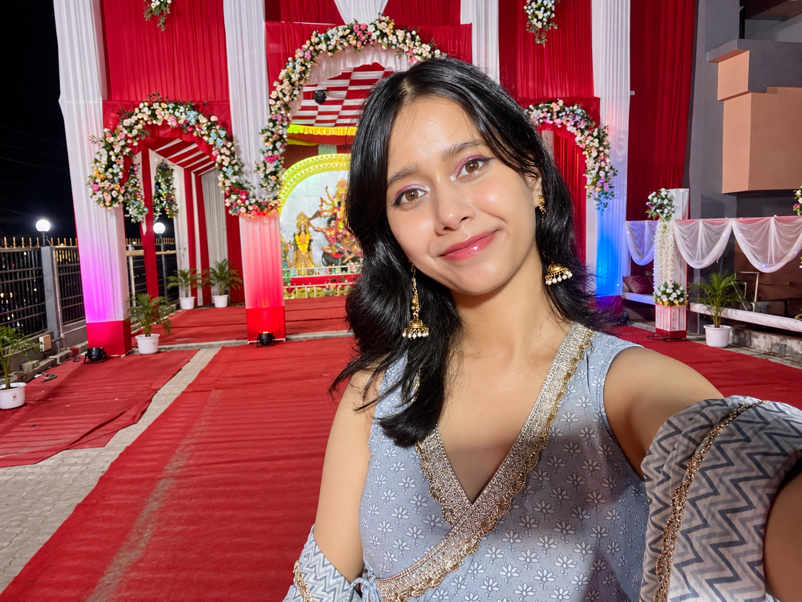
No archive becomes meaningful because every page is extraordinary. It becomes meaningful because ordinary life was considered worthy of remembering.
The photographs in this archive are not evidence of perfection. They are evidence that someone truly lived.
Every photograph preserves appearance. Every memory preserves emotion. Only together do they preserve a life.
A longitudinal study of observable patterns in everyday character.
Rarely answers immediately. Prefers understanding before responding. Silence is usually thought, never uncertainty.
Warm with familiar people. Reserved with strangers. Never performs extroversion.
Avoids unnecessary arguments. When principles are involved, she becomes unexpectedly firm.
Finishes responsibilities before relaxing. Keeps promises even when inconvenient. Quiet consistency over dramatic motivation.
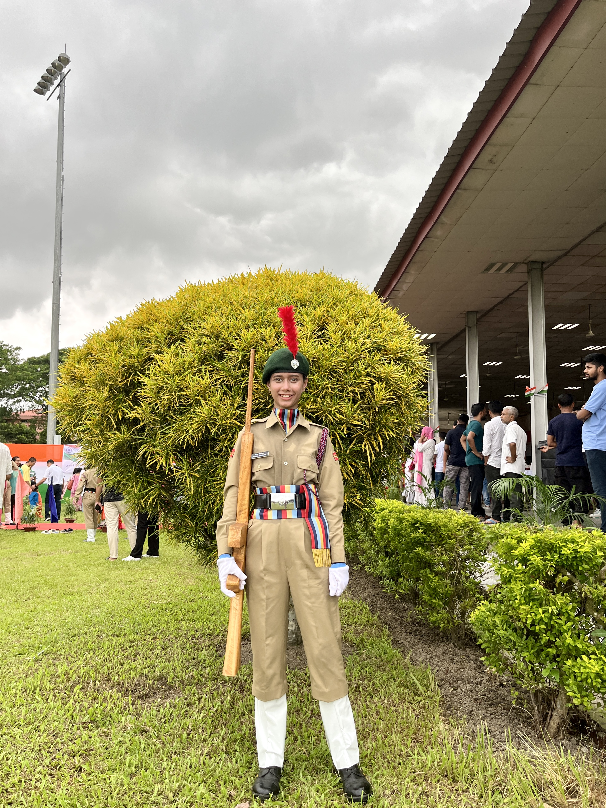
Starts the day slowly and deliberately.
Maintains a clean personal environment because it brings clarity.
Usually carries what she might need before leaving home.
Understands concepts before memorising them.
Feels deeply. Expresses selectively.
Friends describe her as someone who arrives when it truly matters.
Character is not discovered in extraordinary moments. It is quietly confirmed by the ordinary actions repeated every single day.
After repeated observation, one conclusion appeared consistently: her greatest strength is not intelligence alone, nor discipline, nor confidence. It is the rare ability to remain completely herself, even when the world quietly asks her to become someone else.
“Character reveals itself through repeated ordinary days, not extraordinary moments.”
The fascinating, layered contradictions that make her uniquely human.
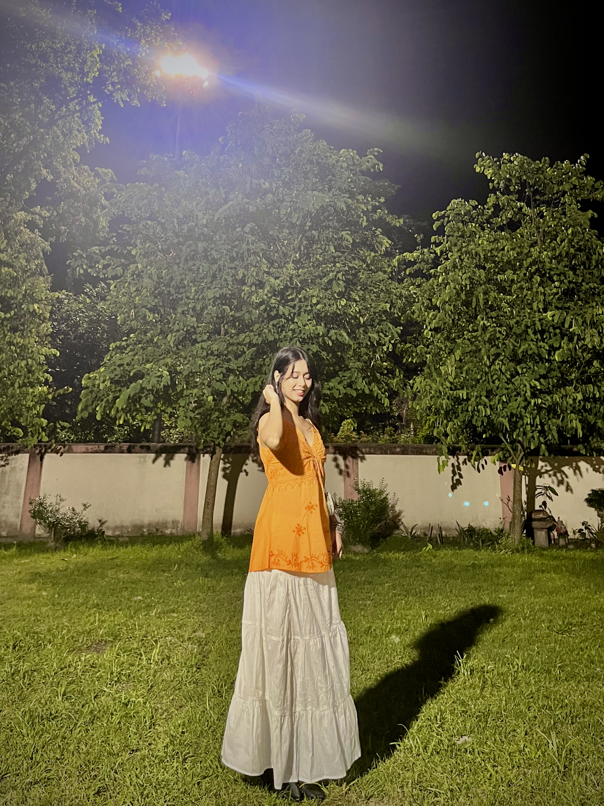
Possesses the calm command to address hundreds from a podium without fear. Yet in an elevator with a solitary stranger, she will gaze at the floor buttons with deep, unbroken dedication.
True to her Libra sign, she will fearlessly defend fairness and truth against any crowd; yet simultaneously spend twenty minutes weighing every option when choosing between two pizza toppings.
Sovereign in her decisions and fiercely protective of her freedom; yet lovingly compelled to recount the arrival time of her morning coffee to her sister confidante in vivid, unfiltered detail.
“These are not contradictions; they are layers. Like the scales she embodies, every facet balances another — moral strength with quiet softness, sharp logic with deep loyalty.”
“The girl who once needed steady hands to take her first steps now walks ahead with quiet confidence, carrying every one of those first discoveries forward.”
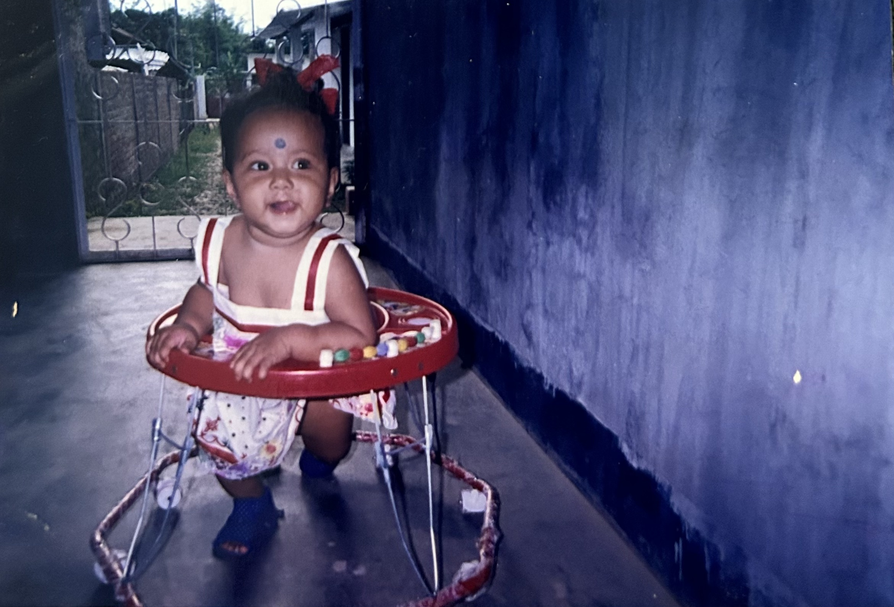
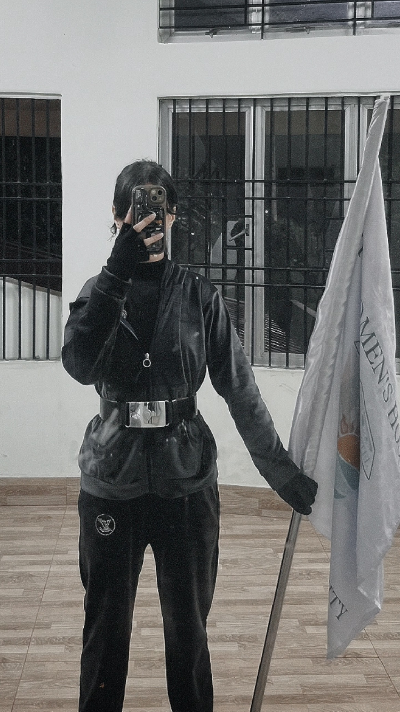
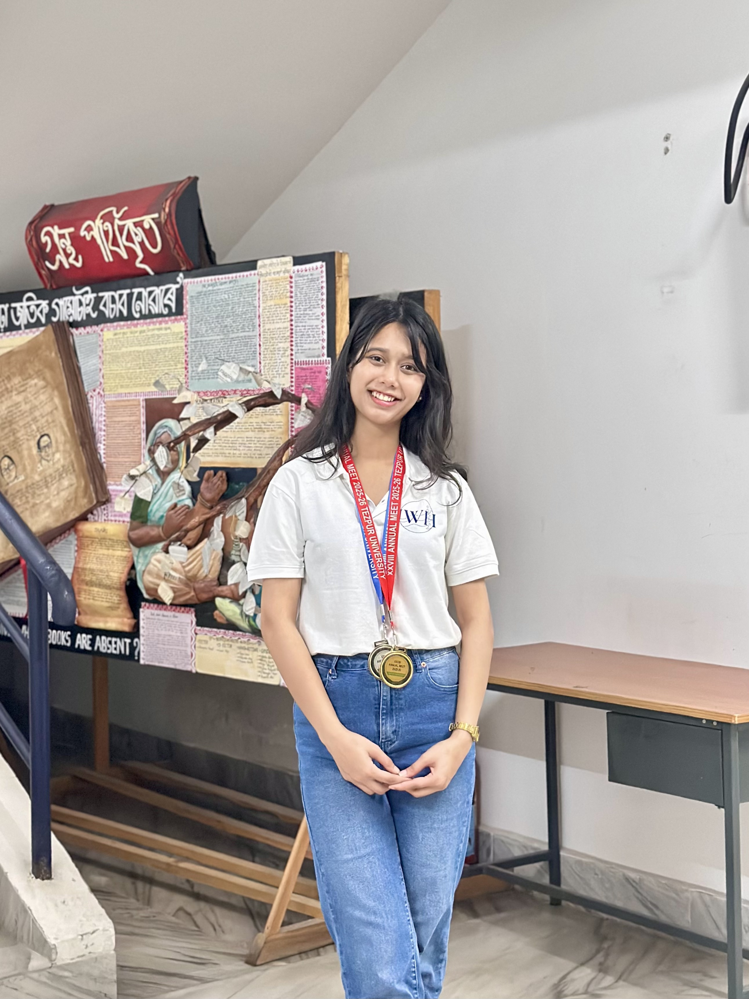
Confidence did not appear all at once. It accumulated in small, ordinary moments—running without worrying, returning home dusty from play, laughing loudly with siblings, watching the world with genuine curiosity. Discipline existed long before medals; kindness existed before recognition. The woman we know did not begin with adulthood. She began here, in these unremarkable hours, learning to move through the world on her own terms long before anyone was watching.
She moves like a river not because she is soft, but because she keeps moving. She has never forced respect to find her. It arrives quietly, in the way people lower their voices when she speaks, in the way they wait for her opinion before deciding for themselves.
She does not argue to prove herself. If a point needs making, she makes it once and lets it sit. She has never competed for attention she did not ask for. Rooms notice her, but she never pursued the noticing.
What she does instead is keep becoming. Year after year, she chooses the same standards without fanfare. Her strength is consistency rather than intensity. Where others burn bright and brief, she simply stays warm.
She chooses depth over noise. A crowded room holds no appeal if the conversation is shallow. She would rather sit with one person and understand them fully than perform for a hundred who will forget her by morning.
Change does not frighten her. She accepts it without losing herself. A new city, a different phase, an unexpected turn—she adjusts her course like water finding its channel, without surrendering her direction.
She is calm without becoming passive. There is a difference between peace and surrender. She holds her boundaries with a quiet certainty that needs no defense. She protects her peace without becoming weak—she simply refuses to spend herself on battles that do not matter.
Her dignity is not worn like a garment. It is carried naturally, like posture. You see it in the way she straightens her chair before sitting, in the way she finishes what she starts, in the way she leaves a room exactly as she found it.
Some people move through life trying to be noticed. She moves through it trying to remain true.
The river never announces its direction. Yet every season it quietly changes the landscape.
“She has never needed to become louder. Only deeper.”
“Some lives are remembered for how brightly they burned. Hers will be remembered for how steadily she flowed.”
This monograph exists because you deserve to see yourself the way we see you.
Not through the lens of achievement or accomplishment, but through the quiet truth of who you are: a person of uncommon grace, intellectual rigor, and genuine substance. You move through the world with a clarity that makes complexity look simple. Your logic is unassailable. Your loyalty is sacred. Your presence is felt before you enter a room.
To know you is to understand that true strength does not announce itself. It lives quietly in the choices you make, the standards you maintain, the boundaries you hold, and the purple-tinted world you've built entirely on your own terms. Every detail of your life—from the immaculate order of your room to the careful deliberation of your words—is a declaration of self-respect that inspires everyone around you.
On your twenty-fourth year, we wanted to create something that captures not just who you are, but who you've always been: someone worth celebrating, worth documenting, worth preserving. May these pages remain a faithful record of your grace, your convictions, and the remarkable journey that continues to unfold.
Reading your mother's sacred words about your arrival on that radiant Diwali morning—blessed to be named Angana, graced as Maa Lakshmi—we understood the foundation of everything you've become. The quiet, enduring love. The belief without question. The permission to be yourself.
As you step into your twenty-fifth year, never change the cadence of your stride. Keep moving like that river—deliberate, patient, and impossibly deep. May your hands forever hold success, genuine laughter, and the kind of unshakeable peace that comes from living entirely on your own terms. May you never apologize for your standards. May you continue to choose substance over sound.
You are seen. You are celebrated. You are cherished exactly as you are.
Creative Direction & Curation: Manu, Guborua, Chirkut, Jhingur
Concept & Design: The Archive Atelier • Format: Metric A4 (210 × 297 mm)
Color Palette: Imperial Violet, Gold Leaf Accents • Stock: 250 gsm Premium Silk Gloss
Typography: Cinzel, EB Garamond, Playfair Display • Dedicated to: Angana — The Twenty-Fourth Year
Registered Series 2026-D-24
Private Single-Run Monograph
Hand-Curated Archive • Autumn 2026
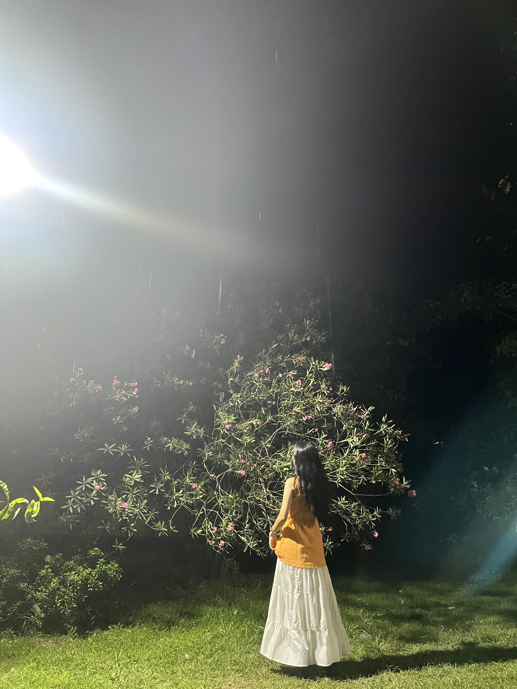